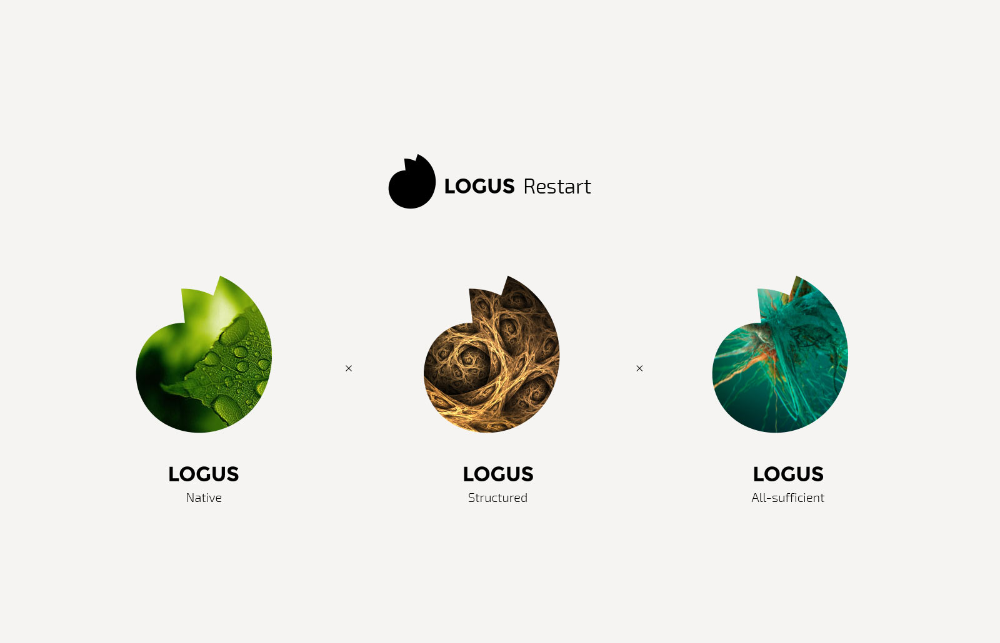
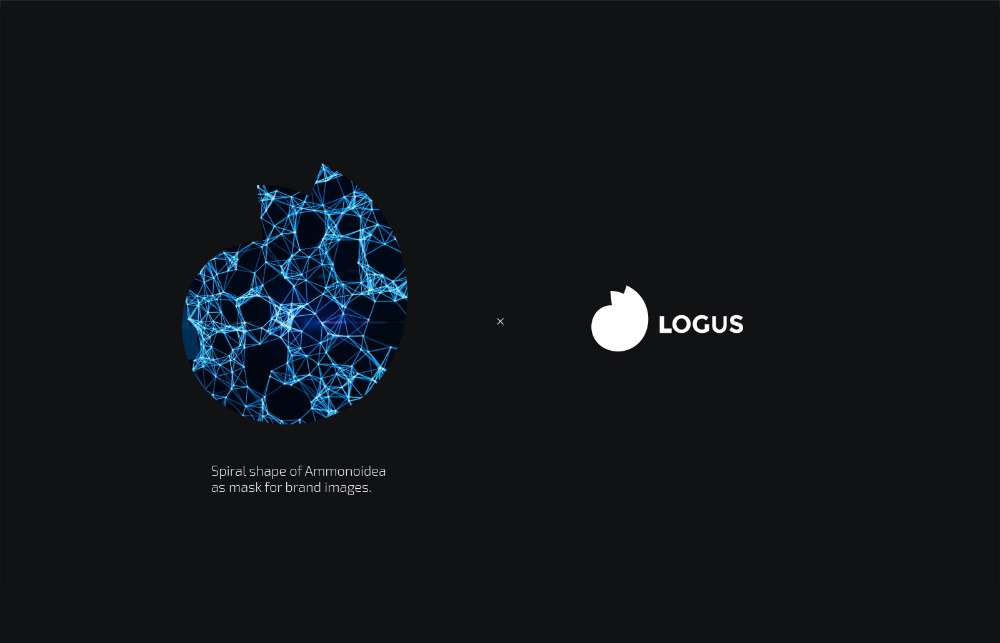
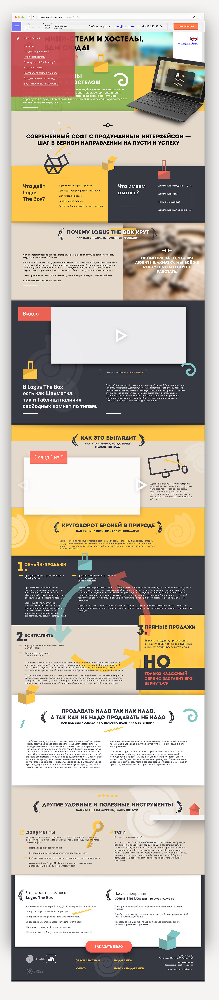

4 February 2015
Logus Logo
Client says:
«The author of the brand concept liked the shape of the spiral shell—you can use an interesting shape, stylize and use as a logo element»
Ammonites (Latin Ammonoidea)—an extinct subclass of cephalopods.
The Ammonites got their name in honor of the ancient Egyptian deity Amun with spiral horns.
Source—Wikipedia .
 Color version
Color version
 The Process
The Process
 Finding shape and color
Finding shape and color
 After the logo was approved, I suggested to the client to simplify the form even more and saturate its content—the ammonite spiral can be used as a mask for any illustration. At the same time, the form remains invariably recognizable.
After the logo was approved, I suggested to the client to simplify the form even more and saturate its content—the ammonite spiral can be used as a mask for any illustration. At the same time, the form remains invariably recognizable.

[Favorite] version on a dark background
Logus The Box website
A one-pager for a hotel business management system.
Technologies: responsive design, unique zoom, parallax effect
Solved tasks: design, development, multilingual
Terms: 2 weeks
Solved tasks: design, development, multilingual
Terms: 2 weeks
 The main and only page—in the manner of modern maximally informative landing pages.
The main and only page—in the manner of modern maximally informative landing pages.

Site — logusbox.pro
Valentina Belousova
Libra Hospitality (Logus—one of the subsidiary brands)
Libra Hospitality (Logus—one of the subsidiary brands)
Alexander and I have already finished two one-page sites. Our partners asked for the designer's contacts, and clients call with the phrase «cool site». Everything is fine, we are working on.